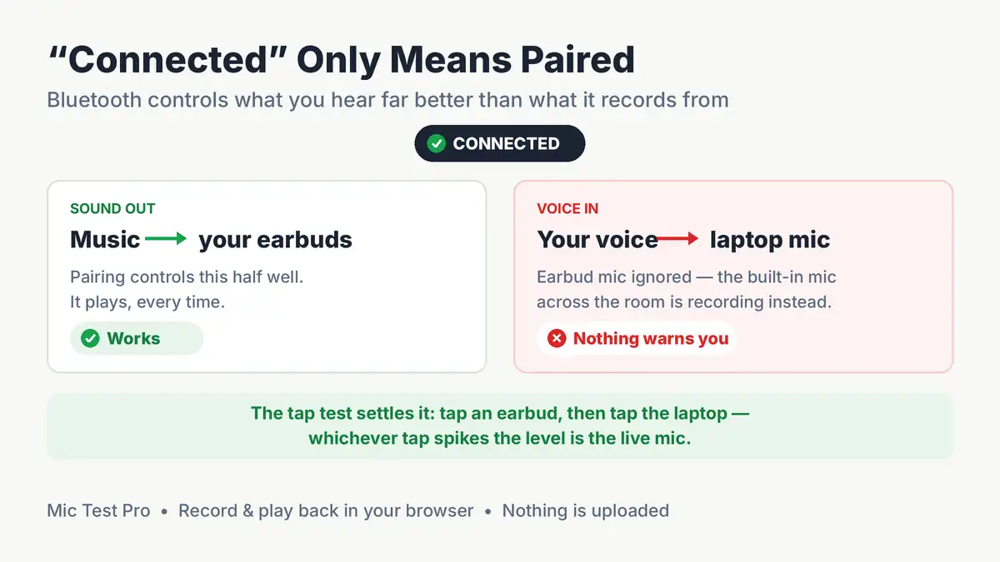
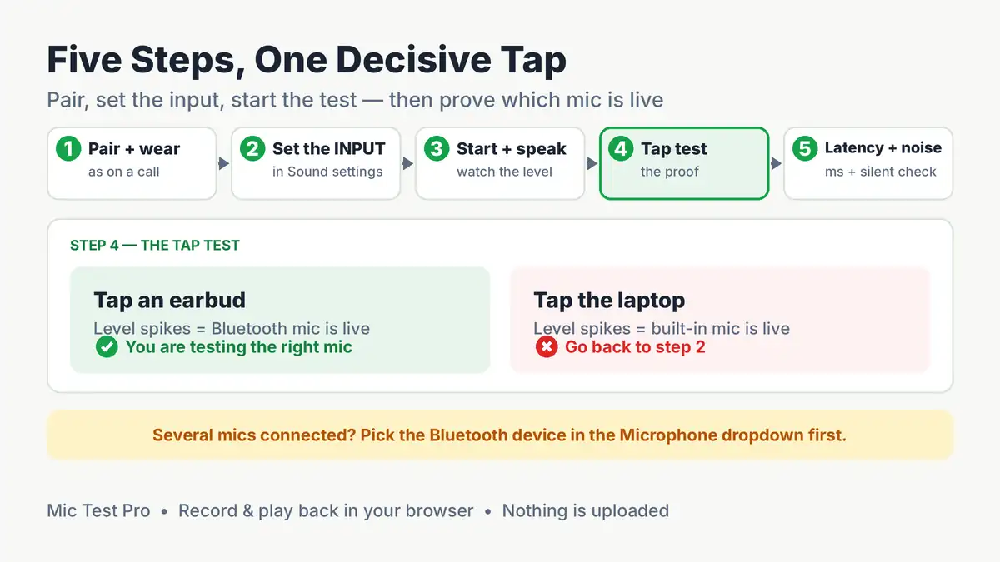
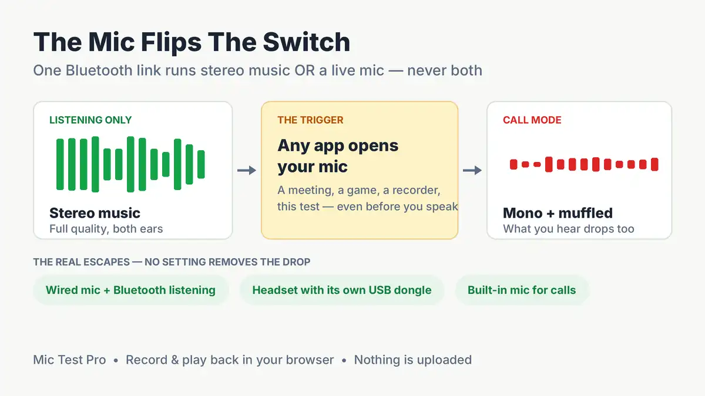
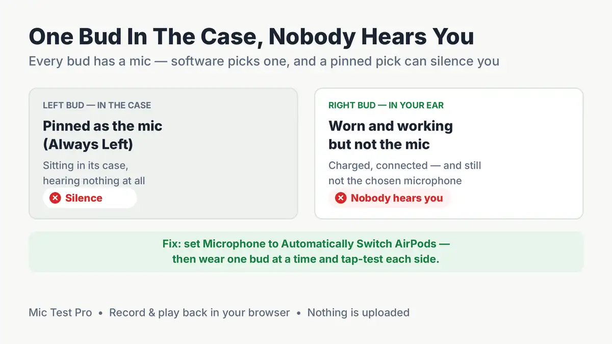

Why Bluetooth Mics Need A Separate Check
Short answer: because "connected" is a lie Bluetooth tells comfortably. It means a pairing exists — nothing more.

A Bluetooth device showing as "connected" doesn't guarantee its microphone is selected or working — pairing controls the audio output far more reliably than the microphone input. Your laptop can happily play music through your earbuds while recording your voice from its own built-in mic across the room, and nothing on screen will warn you. This test confirms whether your system is actually capturing sound from the Bluetooth mic itself.
It also surfaces the real latency your Bluetooth connection introduces, which is normally invisible until you're already mid-call, answering questions half a beat late.
The surest check on this page is the tap test. Start the test, then gently tap one earbud, then tap your laptop or phone. Whichever tap makes the input level jump is the microphone that is live right now. Ten seconds of tapping replaces twenty minutes of guessing in settings menus.
How To Test A Bluetooth Microphone
Pair and connect your Bluetooth headset or earbuds as usual, and wear them the way you would on a call.
In your system sound settings, confirm the Bluetooth device is set as the input, not just the output — Windows: Settings > System > Sound > Input; Mac: System Settings > Sound > Input. On a phone, connecting the headset usually routes both ways, but check the tap test below to be sure.
Click "Start Mic Test" here, allow microphone access, and speak normally — this is your headphone mic test in the browser. Watch the waveform and input level respond.
Do the tap test: tap an earbud gently, then tap near your computer or phone. The tap that spikes the level is the live mic. If the laptop tap wins, your system is still recording from the built-in mic — go back to step 2.
Check the latency reading — if it's high, expect a similar delay in calls using this device. Then stay silent for a few seconds and note the noise level: Bluetooth call audio is narrow enough without adding a noisy room to it. That combination — input level, latency and noise in one headset mic tester — is the fastest way to judge a Bluetooth mic before a call.
If more than one microphone is connected, choose your Bluetooth device from the Microphone dropdown before you start. The browser may otherwise test the built-in mic while your earbuds sit connected for sound only — the tap test in step 4 catches that, and the dropdown prevents it. The latency reading is shown in milliseconds (ms): the delay between speaking and your browser receiving the sound.

Record It And Hear The Bluetooth Difference
The fastest way to understand the Bluetooth quality drop is to hear it in your own voice. Press Record Voice, speak at your normal call volume, then stop and listen to the playback. If your voice sounds thinner than you expected, that is the narrow call profile doing its work — the same sound your callers get. Recordings run up to 60 seconds, you can download the clip as a WAV file to compare against a wired mic, and the audio never leaves your browser.
Two more checks live on the same panel. Test Speakers plays a short test sound through your chosen output, so you can test the listening half of the connection as well as the mic half. Hear Yourself plays your own voice back live while you speak — on Bluetooth, expect a small delay before you hear it.
Bluetooth Mic Quirks To Know
HFP Profile Drop
Using the mic often forces a lower-quality call audio profile on both ends. Bluetooth plays music through a stereo profile and runs calls through an older, narrow, mono profile — and it can only do one at a time. The moment your mic wakes up, everything switches to call quality. It is the most misunderstood behaviour in Bluetooth audio, and the HFP section below explains it fully.
Separate Input Selection
Many OSes list Bluetooth output and input as two different devices to choose from, and choosing one never chooses the other. Windows even lists the same headset twice — a Stereo entry and a Hands-Free entry — with different quality. Most 'my mic doesn't work' cases are simply the input pointing somewhere else.
Battery-Related Cutout
Low battery on true wireless earbuds can cause intermittent mic dropouts before the music stops, and one bud usually drains faster than the other because it has been doing the microphone work. If your mic dies twenty minutes into every long call, charge both buds fully and watch which side the tap test says is the mic.
Range And Interference
Distance from your device or Wi-Fi interference can add noise to the input signal, and Bluetooth shares its radio band with Wi-Fi and every other wireless gadget in the room. Crackle that appears when you walk to the next room, or when a microwave runs, is range and interference, not a dying headset — the fix is distance and line of sight, not settings.
Bluetooth Mic Problems: Problem, Cause, Fix
| Problem | Most likely cause | Fix | Check on this page |
|---|---|---|---|
| Sound works, mic doesn't | Output connected; the input is still the built-in mic, or another device has claimed the mic | Select the headset under Sound input settings, then prove it with the tap test on this page. If the headset is connected to a phone and a laptop at once, disconnect it from one. | Input Level flat — the built-in mic is recording instead |
| Quality drops the moment the mic turns on | The headset switched from the stereo music profile to the mono call profile | Expected behaviour on standard Bluetooth — see the HFP section below. Use a wired mic or a USB-dongle headset if you need music quality while speaking. | Quality reading drops when the mic wakes up |
| Mic not listed in Sound input at all | The hands-free half of the connection never registered | Forget the device and pair again, close to the computer. On Windows look for the Hands-Free entry under Settings > System > Sound > Input. | Device name missing from the input list |
| AirPods mic works on one side only | The Microphone setting is fixed to Always Left or Always Right | iPhone or iPad: Settings > tap the name of your AirPods > Microphone (if it is not shown, tap Audio & Routing first) > Automatically Switch AirPods. | Tap test: only one bud spikes the level |
| Crackling or dropouts when you move | Range or interference in the shared 2.4 GHz band | Move closer, keep line of sight to the device, and move away from routers and microwaves. Test again in the room where calls actually happen. | Noise Level spikes as you move away |
| People say you sound far away | The app is recording the laptop mic while you hear through the earbuds | The tap test proves it in seconds. Set the input to the headset in the system settings and inside the app itself — apps keep their own device choice. | Tap test: the laptop tap wins, not the headset |
| Mic cuts out on long calls | One earbud's battery is draining first because it carries the mic | Charge both buds. For AirPods, the Automatically Switch microphone setting shares the work between sides. | Input Level dies after 20 minutes on one side |
| Delay makes conversation awkward | Bluetooth encoding and call-profile buffering | Normal within limits. This test's latency reading shows your number; a wired headset or your device's built-in mic removes most of it. | Latency reading shows your number in ms |
Why Quality Drops When The Mic Turns On (The HFP Problem)
Short answer: Bluetooth uses different profiles for listening and for talking, and a standard headset can only run one at a time.

Music and video sound use a profile designed purely for one-way, high-quality stereo playback. Phone calls use a different, older profile designed for two-way speech: it carries your voice to the other side and their voice back, in mono, across a much narrower slice of sound. A human voice squeezed into that slice stays understandable, but it loses its top and bottom — which is exactly the muffled, underwater quality people describe. The numbers behind the drop are in the Bluetooth specs: wideband speech in the Hands-Free Profile uses the mSBC codec at 16 kHz, while narrowband calls use 8 kHz — and music over A2DP uses the SBC codec at 44.1 or 48 kHz, up to 512 kb/s for two channels. That is why the same headset can sound rich for music and thin for calls.
The switch is triggered by the microphone, not by the call. Any app that opens your mic — a meeting, a game, a voice recorder, this test — flips the headset into call mode, and everything you hear drops in quality with it. That is why your game audio or music can turn dreadful the second you join a voice channel, even before you say a word. It is the basic bluetooth mic speaker trade-off: one connection cannot carry stereo music and a live mic at the same time.
On Windows the two modes appear as two devices: your headset as Stereo headphones, and again as a Hands-Free headset. Choosing the Hands-Free entry as your output gives you call quality on purpose; choosing Stereo for output and the headset as input is the normal call setup, with the drop applying while the mic is live. No setting removes the drop entirely on a standard Bluetooth connection. The real escapes are a wired microphone alongside Bluetooth listening, a headset with its own USB wireless dongle (which is not Bluetooth and does not use these profiles), or your device's built-in mic for calls.
Testing AirPods And Earbuds: The One-Sided Mic Problem
Short answer: every true-wireless earbud carries a microphone in each bud, and software decides which one works. When that decision is pinned to one side, the other side looks broken.

The same one-sided problem affects every kind of wireless earbud: a TWS mic test (TWS means true wireless stereo — two separate buds with no cable between them) and a neckband mic test (earbuds joined by a band that rests on your neck) both come down to the same check — which side's microphone is live, and whether the system is really using it.
AirPods make the setting visible. With the AirPods connected, open Settings on iPhone or iPad, tap the name of your AirPods, then tap Microphone — if Microphone is not displayed, tap Audio & Routing first. You will find three choices: Automatically Switch AirPods, Always Left AirPod, or Always Right AirPod. On a fixed side, that bud stays the microphone even if you take it out or put it back in its case — leave that bud in the case and join a call with the other one, and nobody hears you, though nothing is faulty. Automatic switching is the right choice for almost everyone, and it also shares battery drain between the buds.
Whatever your brand, test headset microphone input on each side on its own at least once: wear one bud at a time, run this test, and use the tap test to confirm that side's mic answers. It takes a minute, and it tells you whether a 'dead mic' is a setting, a blocked mic hole (earbud mic ports clog easily — check for debris before assuming damage), or a bud that genuinely needs repair. The full AirPods check — one bud at a time, plus the Windows two-device trap and the stem-mesh clean — is on the AirPods mic test page.
More Mic Tests
Bluetooth Mic Test FAQs
How do I test my AirPods microphone?
Connect your AirPods, then open this page in your browser and set the AirPods as the input device if your system asks — on iPhone the browser uses the active audio route automatically. Click Start Mic Test and speak. To prove the AirPods mic, not your phone or laptop mic, is the one being recorded, use the tap test: gently tap an AirPod while speaking quietly, then tap near the laptop or phone. The tap that spikes the input level belongs to the live microphone. That is the whole headset microphone test — connect, speak, and tap to prove which mic is live.
Why does my Bluetooth mic sound muffled compared to my headphones?
Most Bluetooth headsets switch to a lower-quality call profile (HFP) when the mic is active, reducing fidelity compared to music playback profiles. Your music travels on a profile built for stereo sound; your voice call travels on a profile built in the era of phone calls, with a much narrower frequency range. The muffled quality is the profile working as designed, not a broken mic — which is why the same headset can sound great for music and poor for calls.
Why does the audio quality drop as soon as I use the microphone?
Because one Bluetooth connection cannot run the music profile and the microphone at the same time. The moment any app activates your mic, the headset leaves its high-quality stereo mode and switches both directions to the call profile: mono, narrow, and lower rate. On Windows you can watch it happen — the device appears twice, once as Stereo headphones for playback and once as a Hands-Free headset, and using the Hands-Free side for output gives you call quality in both ears. For listening while a mic is live, that drop is unavoidable on standard Bluetooth; a wired mic or a headset with its own USB dongle avoids it.
Why is there a delay when I speak into my Bluetooth mic?
Bluetooth audio naturally adds processing delay: the signal is encoded, sent, and decoded at both ends, and the call profile adds its own buffering. This test reports your browser's measured latency so you can see how significant it is for your device. It matters most for gaming and live monitoring; for ordinary calls most people adapt to it. A wired connection removes nearly all of it.
My Bluetooth device is connected but the mic test shows no input, why?
Check that your browser and OS have the Bluetooth device selected as the default microphone, not just the default speaker — these are set separately. Connected only proves the pairing exists; it says nothing about which microphone your system is actually recording from, and the built-in laptop mic is often still the chosen input.
Why is my Bluetooth microphone not showing in the Sound input settings?
Usually because the device connected for audio output only, or the hands-free part of the connection never came up. Disconnect and reconnect the headset, making sure it finishes pairing rather than sitting at 'paired'. On Windows, check Settings > System > Sound > Input for a Hands-Free entry for the device; on a Mac, check System Settings > Sound > Input. If the entry is still missing, remove (forget) the device and pair it again from scratch, and keep it close to the computer while pairing — a weak first connection often registers output only.
My Bluetooth sound works but the microphone doesn't — what is wrong?
Playback and microphone are separate halves of the connection, and the playback half is far more reliable. The usual causes: your system or app is still using a different input (the laptop mic), the app lacks microphone permission, the headset is connected to two devices at once and its mic is claimed by the other one (multipoint connections do this often), or the battery is low enough that the mic drops first. This test settles which half is broken — if the level moves when you tap an earbud, the mic works and the fault is an app setting.
Why does my AirPods microphone only work on one side?
Each AirPod has its own microphone, and a setting decides which one is used. On iPhone or iPad, open Settings, tap the name of your AirPods, then tap Microphone — if Microphone is not displayed, tap Audio & Routing first. If it is set to Always Left or Always Right, that side is the microphone even when it is sitting in the case, which feels exactly like a dead mic on the other side. Set it to Automatically Switch AirPods so whichever bud you wear does the job. If one side still never works on Automatic, that bud's mic may be blocked by debris or faulty — test each side alone with the tap test on this page.
How do I test a Bluetooth microphone on my phone?
Open this page in your phone's browser with the headset connected, tap Start Mic Test, and allow microphone access. Speak, and watch the input level; then use the tap test — tap an earbud, then tap your phone — to confirm the Bluetooth mic is the live one, because phones silently fall back to their built-in mic when a headset's mic is not selected. Everything runs in the browser, so there is no app to install on Android or iPhone.
Can I test my Bluetooth speakers with this tool too?
Yes. Press Test Speakers and the tool plays a short test sound through your chosen output. That separates the two halves of a Bluetooth connection: if the test sound plays but the mic test stays flat, the listening half works and the mic half is the problem — and the reverse is true if the level moves but you hear no test sound.